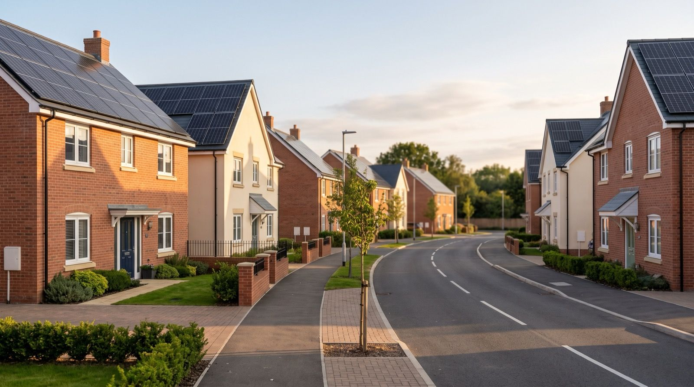

Solar energy enjoys 86% public support in the UK, the highest of any energy source. That figure has held steady for years. People understand solar, and they want it.
But when a developer submits plans for a large-scale solar farm, something shifts.
In Wiltshire, nearly 5,000 people formally objected to the proposed Lime Down Solar Park, a 500MW ground-mount installation on farmland between Malmesbury and the M4. The local council rejected the plans outright (which the developer has appealed).
In Oxfordshire, planning permission for the 840MW Botley West solar farm – one of the largest proposed in Europe – has been delayed after campaigners raised concerns about visual impact, green belt encroachment and loss of arable land.
In Lincolnshire, a fierce political battle is playing out over a string of mega solar farm proposals, drawing in grassroots campaigners, parish councils and national politicians.
The pattern is consistent. People support solar in principle – but they oppose it when it arrives as a single, massive installation on the farmland next to their homes.
This is not hypocrisy. It is a design problem.
How many rooftops equal a 500MW solar farm?
Lime Down would generate 500MW of peak capacity. That is a significant contribution to the grid, enough to power around 115,000 homes annually according to the developer.
But 500MW does not have to sit in a single field.
A typical new-build home can accommodate a 4kW to 6kW rooftop solar system. At an average of 5kW per home, 500MW of capacity would require around 100,000 rooftops.
That sounds like a lot, but the UK is building roughly 200,000 to 250,000 new homes every year. The Future Homes Standard, published in March 2026 and coming into force from March 2027, requires on-site renewable electricity generation on most new homes. Solar PV on the roof is the most practical and affordable route to compliance. With a 12-month transition period, the standard will apply to virtually all new homes from 2028.
The capacity that Lime Down would deliver in one location could be matched by less than a single year of new-build housing, spread across developments the length of the country.
Rooftop solar vs solar farms: four advantages
The case for rooftop solar on new-build housing is not just about avoiding opposition. It is structurally beneficial for the energy system in ways that ground-mount generation simply can’t match.
1. Generation meets demand before it reaches the grid
A solar farm generates electricity in a field and exports it to the transmission or distribution network. That electricity must then travel through the grid to reach the homes and businesses that consume it.
Rooftop solar on a home generates electricity at the point of consumption. UK research found that households consume around 45% of their solar generation on-site. Add a battery and that figure rises significantly, with some systems achieving 70% or higher.
Electricity that never leaves the site of generation does not need grid infrastructure to carry it.
2. It reduces the need for grid reinforcement
The UK’s grid connection queue currently contains over 700GW of projects waiting to connect, roughly four times the capacity needed to meet 2030 clean power targets. Grid reinforcement is one of the biggest bottlenecks in the energy transition, with estimates suggesting £60 billion of network upgrades are needed by 2035.
Every kilowatt-hour consumed behind the meter is a kilowatt-hour that does not add to grid congestion. Distributed rooftop solar, particularly when paired with battery storage, eases pressure on local distribution networks rather than adding to it.
A 500MW solar farm needs a grid connection. 100,000 rooftop systems do not, at least not in the same way.
3. It preserves farmland and avoids visual impact
The most common objections to solar farms centre on the loss of agricultural land and the visual transformation of rural landscapes. These concerns are legitimate. Farmland has economic, ecological and cultural value.
Rooftop solar uses space that already exists. The roof is there whether or not panels sit on it. There is no change of land use, no loss of productive acreage, no alteration to the character of the countryside.
4. It lowers energy bills from day one



Residents in homes with rooftop solar and battery storage benefit directly from the electricity generated overhead. A well-specified system can reduce a household’s annual electricity demand from the grid by 24% or more, even without a battery. With storage, the savings are substantially greater.
A solar farm delivers clean power to the grid. A rooftop system delivers clean power to the household living beneath it. The economic benefit is direct and immediate.
This is not anti-solar-farm
Large-scale solar has a role to play. The UK needs every megawatt of clean energy it can deploy, and ground-mount installations will remain part of the mix. The point is not that solar farms are wrong. It is that the current approach concentrates generation in places where it creates friction, while leaving millions of rooftops empty.
The UK grid hit a record 14.4GW of solar generation in April 2026. Renewables provided 52.5% of Britain’s electricity in 2025. The trajectory is right. The question is how we sustain it without burning through public goodwill in the communities where these projects are sited.
Rooftop solar on new-build homes: a better deployment model
At Gryd, we fund, specify and manage rooftop solar and battery systems on new-build housing. Developers pay nothing upfront, and residents get lower bills from the day they move in. The systems are installed by MCS-certified partners and maintained throughout their operational life.
Every home we equip is a small piece of that distributed solar farm. Not concentrated in one field, but woven into the fabric of new communities across the country.
The 5,000 people who objected to Lime Down were not objecting to solar. They were objecting to a model that puts all the generation in one place and all the disruption on one community.
There is another way to build 500MW. It starts on the rooftop.